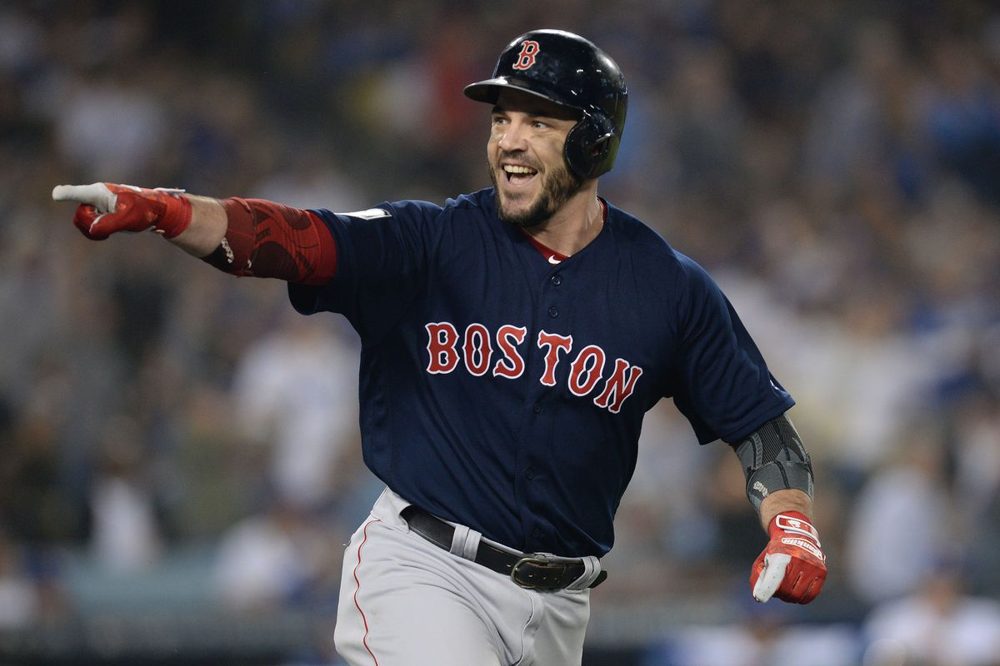
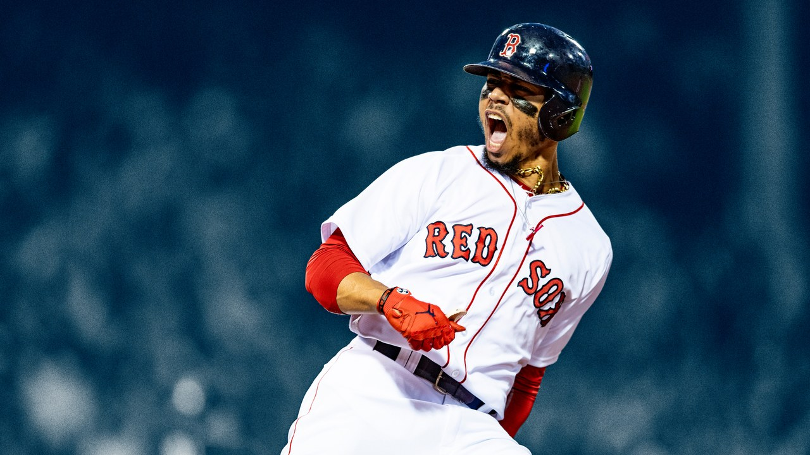

The 2018 Season
As we all have our eyes on a new championship lets take a look back on last years championship season
World Series MVP: Steve Pearce

35 year old Steve Pearce was a late season trade from the Blue Jays. Pearce had been traded four times and has been itching to find his home. Well he surley found it in Boston where he shined in the World Series to help lift the Sox to a championship
AL East MVP: Mookie Betts

26 year old Mookie Betts led the MLB in hitting, ranked second in runs, on-base percentage and third in slugging. Betts' stats stand out but his performance in the World Series was just icing on the cake.